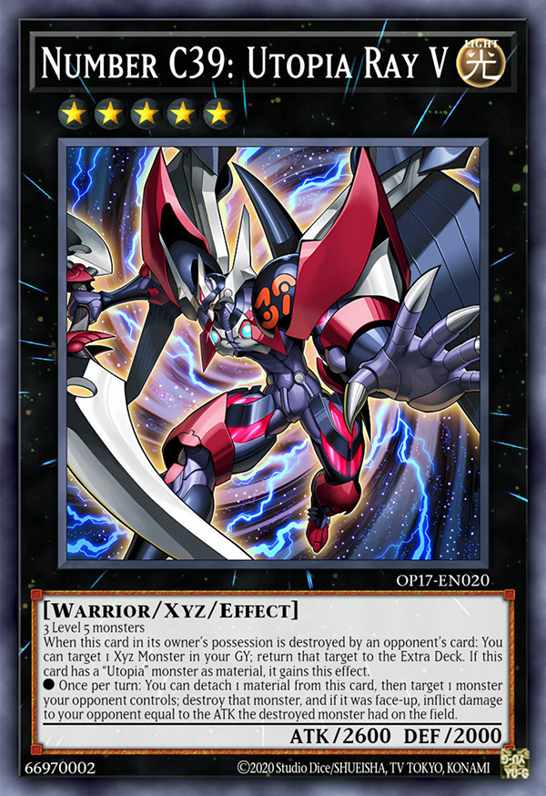
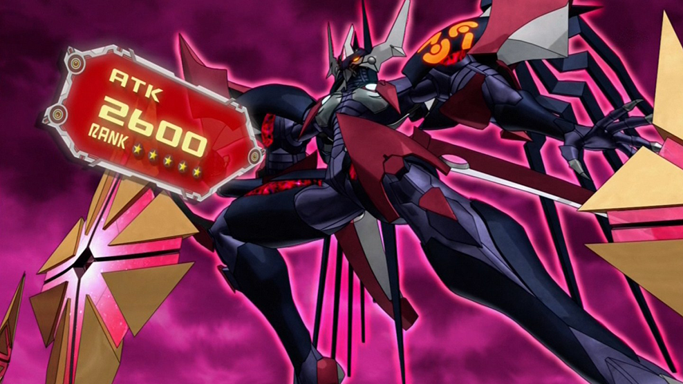
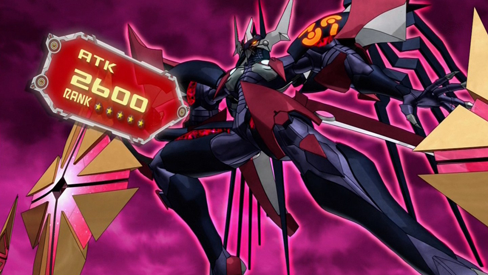

Number C39: Utopia Ray V being summoned for the first time

Number C39: Utopia Ray V being summoned for the first time
Number C39: Utopia Ray V
The third form of Utopia and second evoution of Utopia Ray, he first appears in episode 88 of Yu-Gi-Oh! Zexal on January 27th, 2013.Just like with Leo Ray, instead of using 3 level 5 monsters, you can just use a rank up card on your base Utopia.
If this monster dies you can target one xyz monster thats in your graveyard and return it to your extra deck. If you used Utopia to summon this monster you can also target one monster your opponent controls and destroy it, plus deal damage to your opponent equal to it's attack points if it was face up. This can only be done onec per turn however.
Utopia Ray V came along when Rei, a friend of Yuma, gave him a card from the enemy! Rank up Barian Force! Yuma, trusting in his friend despite the dangers, uses this card to summon a Utopia that looks darker than usual (literally!)
While Utopia Ray V's has smaller armor then Ultimate Leo, he still has that sharpness. From the color pallet of dark purple and reds, you can feel that this Utopia has a different vibe from the previous forms, as if he was more chaotic.
"Wrapped in the power of chaos, aim for victory! Reveal your evolved valorous form! Appear now! Chaos Numbers 39: King of Wishes - Hope Ray V!"
-Yuma's Japanese summoning chant for Chaos Number 39: Utopia Ray V